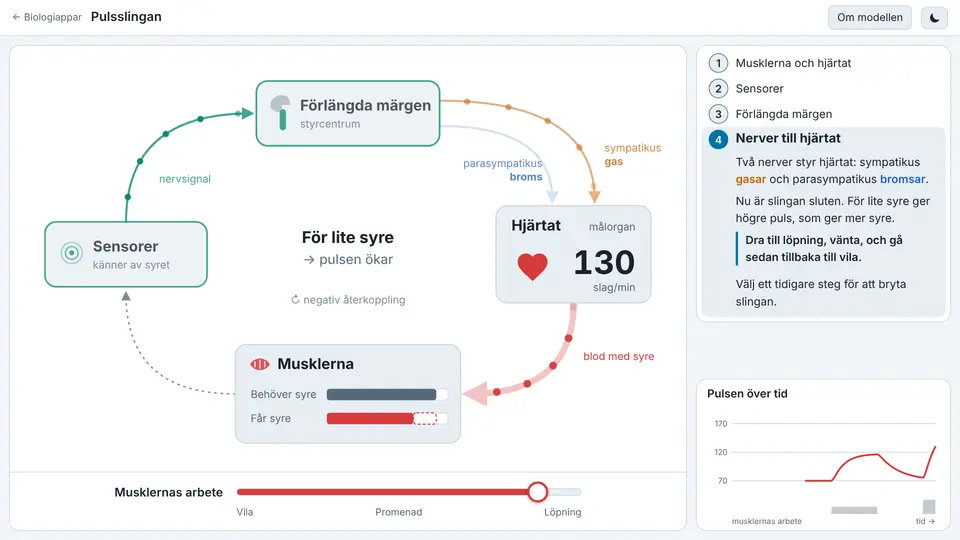
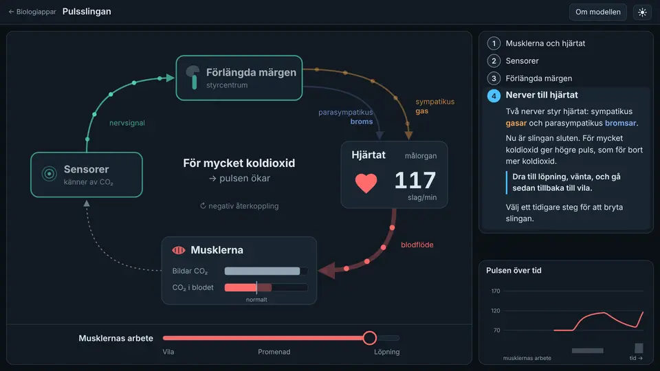

Pulsslingan0.1
Varför slår hjärtat fortare när du springer? Bygg upp regleringen av pulsen en del i taget: musklerna och hjärtat, sensorerna, förlängda märgen och nerverna till hjärtat. Ett enda reglage, musklernas arbete, visar vad varje del gör och vad som saknas tills slingan är sluten.
När slingan är sluten syns hur kroppen kompenserar: syret räcker inte, pulsen stiger och balansen kommer tillbaka. Gjord för att förstås snabbt, med lite text och få saker att hålla reda på.
- Homeostas
- Negativ återkoppling
- Puls
- Sympatikus och parasympatikus
- Förlängda märgen